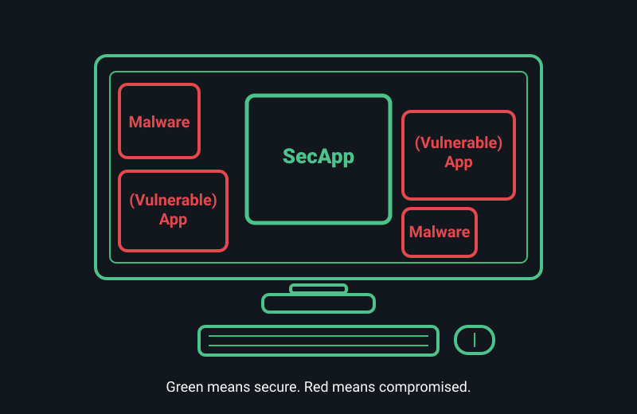

App Protection Must Remain Secure Against 300,000++1
Potential OS Vulnerabilities
GreenBox
Today’s Solution
1 On average, about three vulnerabilities are found per 10,000 lines of code (see “Using ChatGPT to Analyze Your Code? Not So Fast”). Widely used operating systems—together with third-party device drivers and a broad set of administrative tools—collectively exceed one billion lines of code, and that footprint keeps growing. Exploiting a single vulnerability is often enough to mount a successful attack.
GreenBox – The Assured App Protection
Against All Cyber Attacks to OSes and Other Apps.
Separate Security-Sensitive Applications (SecApps) from Operating Systems (OSes) (e.g., Windows, Linux,
MacOS)
Design to be small, simple, and formally verifiable
Preserve users' experience

~10 U.S. and International Patents, ~10 Top Conference Publications
Team From Carnegie Mellon
University's CyLab
Who Need GreenBox?
Protect Personal Info with Strong Isolation
- Secure Document Processing — Use “Secure Remote Desktop” SecApp on GreenBox.
- Secure Online Payment — Use “Secure Remote Desktop” SecApp on GreenBox.
- Secure File Backup/Restore — Use “Secure Remote Files” SecApp on GreenBox.
Secure Business Operations Against Continuous Cyber Threats
- Defeat Ransomware — Employees use “Secure Remote Files” SecApp on GreenBox to protect files hosted on clouds/servers.
- Defeat APT Attacks — Employees use “Secure Remote Desktop” SecApp on GreenBox to access sensitive IT assets hosted on central servers.
- Secure 3rd-Party Access — Partners use “Secure Remote Desktop” SecApp on GreenBox to access authorized IT assets.
Why Choose GreenBox?
GreenBox is the only endpoint solution to offer sufficient protection to SecApps.
| Approaches | Goals | Security Flaws by Design | Assurance |
|---|---|---|---|
| Antivirus, Firewall | Keep (host) OSes malware-free to run SecApps | No 100% detection and prevention of unknown threats | Insufficient and cannot satisfy (Must trust billions of lines of code in OSes) |
| Virtualization, Containerization |
Same as above | Incomplete protection of host OSes' attack surfaces | Same as above |
| GreenBox | Separate SecApps from (inevitably vulnerable) OSes and all applications | — | Sufficient (formally verifiable) |
Latest News
Contact
Questions, collaborations, or security reports? Reach out:
- Email: Miao Yu (Superymk)
- GitHub Issues: Open an issue